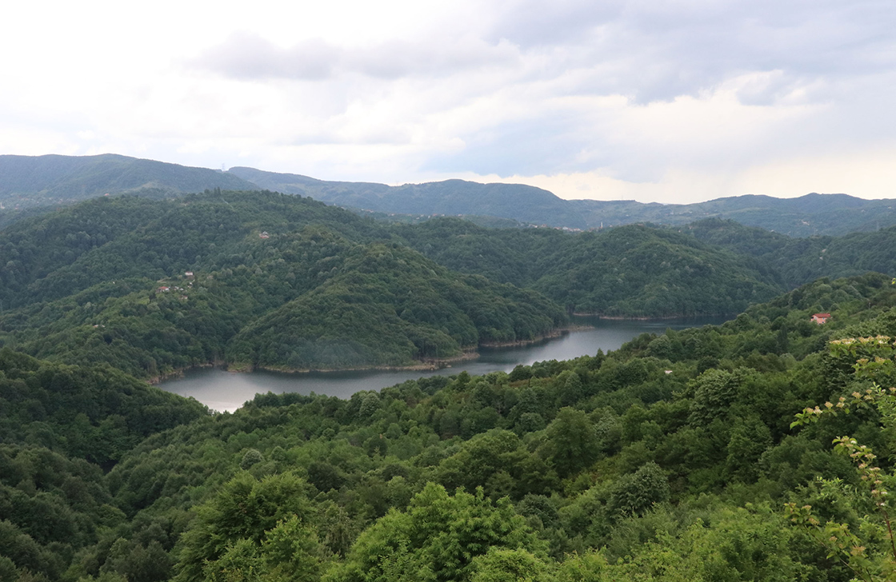

Haber
15 Ocak 2025
Batı Karadeniz'in 20 Yıllık Ormancılık Stratejisi Belirlendi
Kastamonu'da yapılan çalıştayda bölgenin uzun vadeli ormancılık stratejileri masaya yatırıldı. Biyoçeşitlilik ve koruma alanları vurgulandı.